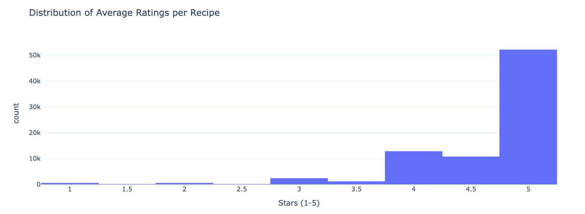
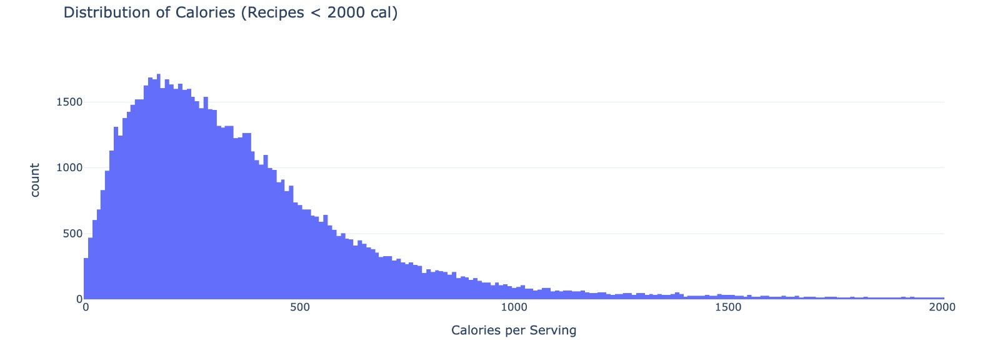
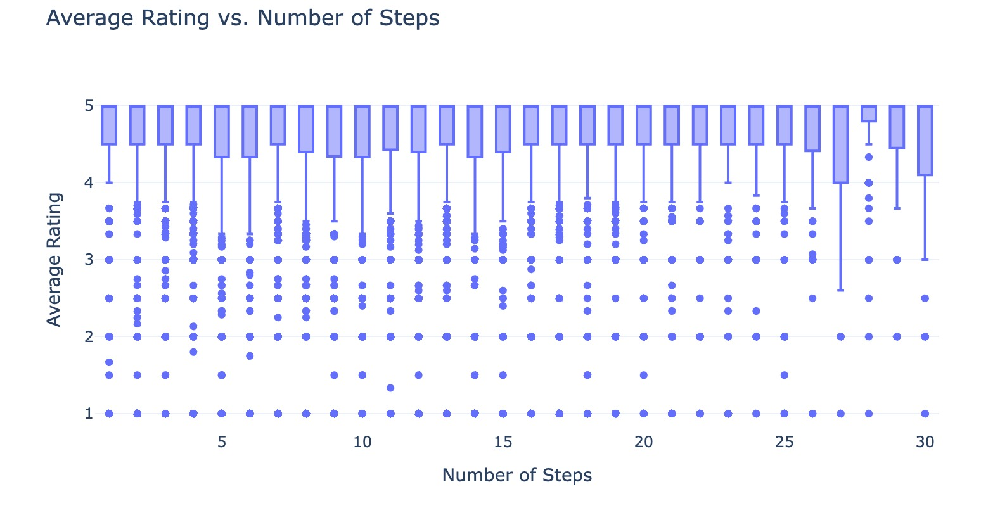
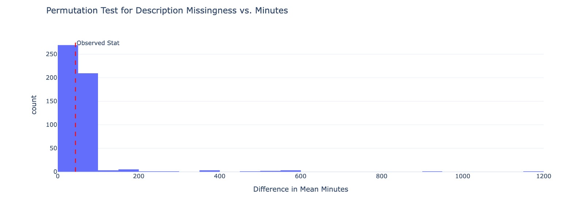
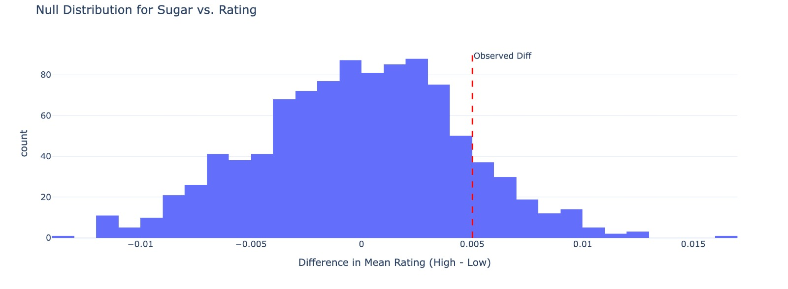

We merged the recipe and interaction data to associate ratings with nutritional content. Ratings of 0 were replaced with NaN because they represent missing interactions. The 'nutrition' string was parsed into numeric columns for analysis.
| name | id | minutes | contributor_id | submitted | n_steps | n_ingredients | average_rating | calories | total_fat | sugar | sodium | protein | saturated_fat | carbohydrates | is_high_sugar | |
|---|---|---|---|---|---|---|---|---|---|---|---|---|---|---|---|---|
| 0 | 1 brownies in the world best ever | 333281 | 40 | 985201 | 2008-10-27 | 10 | 9 | 4.0 | 138.4 | 10.0 | 50.0 | 3.0 | 3.0 | 19.0 | 6.0 | True |
| 1 | 1 in canada chocolate chip cookies | 453467 | 45 | 1848091 | 2011-04-11 | 12 | 11 | 5.0 | 595.1 | 46.0 | 211.0 | 22.0 | 13.0 | 51.0 | 26.0 | True |
| 2 | 412 broccoli casserole | 306168 | 40 | 50969 | 2008-05-30 | 6 | 9 | 5.0 | 194.8 | 20.0 | 6.0 | 32.0 | 22.0 | 36.0 | 3.0 | False |
| 3 | millionaire pound cake | 286009 | 120 | 461724 | 2008-02-12 | 7 | 7 | 5.0 | 878.3 | 63.0 | 326.0 | 13.0 | 20.0 | 123.0 | 39.0 | True |
| 4 | 2000 meatloaf | 475785 | 90 | 2202916 | 2012-03-06 | 17 | 13 | 5.0 | 267.0 | 30.0 | 12.0 | 12.0 | 29.0 | 48.0 | 2.0 | False |
"The distribution of average ratings is heavily skewed toward 5.0. Most recipes fall under 500 calories."

"Simpler recipes are more common, but median ratings remain stable across complexity."

"High-sugar recipes tend to have slightly higher ratings and significantly higher calories."

We analyze patterns of missing data to determine if missingness is related to other variables.
The 'rating' column is likely MNAR (Missing Not At Random) because neutral experiences often lead to skipped ratings.
We tested if 'description' missingness depends on 'minutes'.
Hypotheses:
| Observed Difference | [Insert Value] minutes |
| P-value | 0.592 |

Conclusion: With a p-value of 0.592, we fail to reject H0. Missingness appears to be MCAR.
Formal test to determine if sugar levels significantly impact ratings.
| Observed Difference | 0.0050 |
| P-value | 0.1210 |
Since our p-value (0.1210) is greater than α = 0.05, we fail to reject the null hypothesis.

We do not have sufficient evidence to say that sugar content significantly impacts the average rating. This implies that health-conscious options are not perceived as less "tasty" in terms of star ratings.